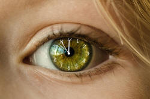

Gerunds and infinitives: the essentials
 |
| I enjoy gardening and I want to try to grow those |
First, some definitions:
- A gerund
Simply put, a gerund is a verb acting as a noun. The example above includes I enjoy gardening and the gerund is gardening.
For example, in:
I enjoy reading
The word reading is a gerund, and it acts as a noun object for the verb enjoy. Compare, for example:
I enjoy books
in which the object of the verb enjoy is now a recognisable plural noun.
Gerunds act like nouns but they also have some obviously verb-like characteristics. So, for example:- They take direct objects, just like verbs so we can
have, e.g.:
I enjoy reading detective novels
where the gerund, reading, has a direct object, detective novels, just like many other verbs. - We can also use an adverb to modify a gerund (not an adjective
as would be the case if it were a pure noun) so we allow, for
example:
I enjoy strolling aimlessly around the town
where the word aimlessly is an adverb modifying the gerund strolling.
- They take direct objects, just like verbs so we can
have, e.g.:
- A verbal noun
Verbal nouns often look like gerunds, and they often perform the same function in a clause, acting as nouns.
However, a verbal noun is a noun derived from a verb, not a form of a verb as such. This means:- They cannot take a a direct object so we do not allow,
e.g.:
*The painting the village was beautiful
because, although painting looks like a verb or a gerund, we cannot add the object to it because it is a noun. This means it has to be treated as a noun and modified with a prepositional phrase as in:
The painting of the village was beautiful - They are modified by adjectives, not adverbs so we do
not allow, e.g.:
*The beautifully painting
but need to use an adjective and have:
The beautiful painting - They can be made plural as in e.g.:
There were lots of paintings of the village
and we cannot to that with a gerund so we do not allow:
*I do a lot of walkings
refuse → refusal
describe → description
furnish → furniture
etc.
Gerunds, on the other hand, always end with -ing. - They cannot take a a direct object so we do not allow,
e.g.:
- An infinitive
Also simply put, an infinitive in English is the base form of the verb and it can also act as the object of another verb. In the example above there are two infinitives: to try and to grow. Infinitives in English can appear with and without to before them, so, for example:
I prefer to wait
She can go
both contain infinitives. In the first case we call it the to-infinitive and in the second, the bare infinitive.
There is more on the use of the infinitive linked from the list of related guides at the end.
 |
So, what's the problem? |
The issue in English is fourfold:
- In English, the bare infinitive takes the same form as the
verb operating as a finite form. For example, in both:
We work in London
and
You should work harder
the function of the verb work is indistinguishable by looking at its form. In many languages that would not be the case because there would be an ending on the verb to show the person and the number. This does happen in English but the system is greatly reduced and only the third-person singular carries an ending as in, e.g.:
He works in London
vs.
He should work harder - We saw above that the infinitive in English can take two
forms and that is a slightly unusual phenomenon. It is not
always a simple matter to select the to-infinitive or
the bare infinitive. We have, for example:
I let him go
which contains the bare infinitive following the verb let and we also have a parallel structure:
I permitted him to go
which carries more or less the same meaning but contains the to-infinitive.
In many languages (at least those that have an infinitive form of some kind) only one form is possible. This leads to errors such as:
*I can to do it
*I ought go
*She will to be there
etc. - The gerund form in English looks exactly the same as
something called the present participle and that can be
confusing sometimes for learners. For example, in:
She is reading
and
She enjoys reading
the form of reading looks the same but in the first sentence, it is functioning as a verb and in the second as a noun (albeit a noun with verb-like characteristics as we saw at the beginning). - The final issue, with which this guide is mostly concerned,
is that verbs in English can be followed by either the
infinitive or the gerund. The technical terms is that
verbs colligate with one form of the other and
it is not always easy to decide which form to use. For
example, it is not obvious why:
I promised to drive
and
I enjoy driving
are correct, while
*I promised driving
and
*I enjoy to drive
are not.
The problem is compounded by the fact that, in many languages, only one verb form is permissible in this kind of construction so learners may select the one they are most comfortable with, often the infinitive, and use it indiscriminately.
There's a bit more on some of this below.
What follows the verb? |
Some verbs are followed by a gerund, some by an infinitive (the base form of the verb with to before it).
The technical term for verbs operating like this in chains is
catenation (from the Latin for a chain). There is a much
fuller guide to catenation in the in-service section of the site (linked
below in the list of related guides).
If you would like the PDF document concerning catenative verbs which
includes considerations of to-infinitives and gerunds following
verbs, click
here.
Here are some examples:
| I want to help to clear up | He offered to clear up | They expected to have a problem | I hate flying | I would like to go now |
| They chose to do it | They regretted doing it | We stopped them working | Remind me to post the letter | I'm regret going |
 |
or |
 |
Can you categorise the following verbs? Put them all in a sentence in your head and decide whether they are followed by the to-infinitive (e.g., to go) or the gerund (e.g., going). Then see if you can find a pattern. Click when you've done that. |
| advise | aim | deny | allow | avoid | promise | instruct | beg | build | threaten |
| teach | enjoy | resume | forbid | permit | persuade | detest | promise | suggest | encourage |
| arrange | begin | finish | miss | invite | ask | challenge | admit | hope | force |
|  |
How we see events in time |
Did you see the pattern?
The following is not a hard-and-fast rule by any means but:
- Verbs which
take the infinitive look forward in some way. For
example:
We expect to arrive around 6
I invited them to come
The dog threatened to attack
They forbid you to go
and so on.
In these cases, the action or event signified by the first verb precedes the action or event of the second verb. This is true even when the second event does not happen because the non-event also follows the first verb as in, e.g.:
I forbade them to go
where they might not have gone or might have disobeyed and gone anyway. The act of forbidding in both cases, comes first.
Other verbs with the same pattern of verb + -ing form (often for a future action) include:
Items marked * may be used with either form, sometimes with a change in meaning as in e.g.:†advise
(can) afford
agree
aim
†allow
appear
apply
arrange
†ask
attempt
be bound
*begin
care
cease
chance
choose
claimcommence
†compel
condescend
consent
contrive
*continue
dare
decide
decline
demand
deserve
determine
†encourage
endeavour
elect
expect
failforbid
†force
happen
hasten
help
hesitate
hope
instruct
*intend
invite
learn
long
manage
mean
need
neglect
†oblige
offer
omit
†order
†permit
†persuade
plan
prepare
†press
pretend
proceed
promise
propose
refuse
†remind
†request
resolve
seem
*start
struggle
swear
†teach
†tell
†tempt
tend
threaten
trouble
undertake
volunteer
want
wish
would like / love
Try taking an aspirin for your headache (experiment)
I tried to convince her (attempt)
Items marked † are usually used with a direct object as in, e.g.:
I persuaded them to come - Verbs which are based on previous experience or look back in
some way usually take the gerund. For example
I enjoy playing football
She hates flying
The child detests eating meat
She admitted breaking the glass
We will resume talking later
I deny lying about this
and so on.
In these cases, it is clear that in order to be able to say, for example:
I can't bear waiting in a queue
the speaker must at some time have experienced waiting in a queue so the first state or event follows the second in time.
Other verbs which follow the same pattern of verb + previous state or event already experienced include:
Items marked * may be used with either form, sometimes with a change in meaning as in e.g.:acknowledge
admit
adore
appreciate
avoid
(can't) bear
celebrate
consider
defer
delay
deny
detest
dreadenjoy
escape
‡excuse
‡explain
fancy
favour
finish
*forget
‡forgive
give up
hate
(can’t) help
(can’t) imagineleave
*like
loathe
*love
mention
(don't) mind
miss
‡pardon
*prefer
‡prevent
postpone
practiseput off
quitrecall
recollect
regret
*remember
resent
(can’t) resist
risk
shun
stop
(can't) stand
tolerate
*try
‡understand
Try taking an aspirin for your headache (experiment)
I tried to convince her (attempt)
Items marked ‡ are usually used with a possessive determiner before the gerund as in, e.g.:
I can’t understand their leaving early (informally, the object pronoun, e.g., them)
You can see the rule working clearly with the class of verbs which take
either the gerund or the infinitive but with a change of
meaning.
Compare:
He remembered
to post
the letter
in which the remembering comes before the posting with
He remembered posting the letter
in which the posting comes before the remembering.
The
verb forget works similarly:
I forgot to tell
him
in which the forgetting came before the non-event of telling him
I forgot telling
him
in which the telling occurred but was later forgotten.
And the verb regret also has the same characteristics:
They regretted
telling me
in which regretting comes after telling
with
They regretted to
tell me.
in which regretting comes immediately before telling.
Although not to do with the ordering of events, the verb try changes its meaning when followed by an
infinitive or a gerund:
I tried taking an
aspirin
means I experimented with this as a cure, but
I tried to take an
aspirin
means I attempted to take an aspirin (and probably failed).
If you would like a single document with the two tables above combined, one is available here.
 |
Breaking the 'rule' |
Some verbs do not conform to the two patterns set out above. In
that sense they break the rule but it is, in any case, only a rule of
thumb.
These verbs include two which should, if the rule is followed, take a
gerund because they refer back in some way, but are usually followed by an infinitive: claim,
deserve.
The following verbs usually take a gerund although the rule above would suggest they should take an
infinitive because they refer forward: avoid, consider, contemplate, defer,
delay, escape, evade, (can't)
help, keep on, postpone, put off, resist, risk.
Is it a verb, an adjective or a noun? |
There is a problem in English which makes life quite
difficult for learners, and, alas, a number of teachers.
It is this:
The -ing
form of a verb in English signals
four possible
grammatical functions.
Here is what is meant:
- A verb acting as a noun (a gerund)
This is what we have considered so far and here are some more examples:- She enjoys running
in which running is the object of the verb enjoys and could be replaced, for example, by a more recognisable noun such as chocolate or her garden etc. - I objected to his criticising me
in which it is less easy to replace the -ing form with a simple noun because it clearly has an object (me) so we will have to rephrase the whole sentence as something like:
I objected to his criticism of me
- She enjoys running
- A verb form which signals that something is in progress or a
continuous event
This is an example of aspect in English, usually called continuous or progressive. The -ing form here is called the present participle but it often appears with past tenses. A better term would be an -ing participle. For example:- The professor was writing a letter when the 'phone rang
in which the verb form (was writing) suggests that this was an an action in progress when the telephone rang and interrupted him - I am taking the bus to work these days
in which it is clear that the speaker is not actually on a bus (probably) but is referring to a continuous background event which is probably, not certainly, temporary - I am seeing Mary tomorrow
in which the speaker is using the same sort of tense form to talk about a current arrangement for a future event
- The professor was writing a letter when the 'phone rang
- A verb acting as an adjective
This is derived from the continuous or progressive -ing participle to describe an object or person. For example:- Mary is extremely irritating
which could be rephrased as
Mary irritates people habitually - It's a frightening film
which means The film frightens people - It's part of the aging process
in which the adjective describes the process just as something more adjective-like, such as, mechanical could be used instead.
- Mary is extremely irritating
- A verbal noun
Verbal nouns are unlike gerunds in that they have lost all verb-like qualities. They do not take objects (direct or otherwise), they can be made plural in the normal way of nouns and they are modified by adjectives, not adverbs. Many are formed by the addition of the -ing suffix but there are other ways to form nouns from verbs (as in the last two of these examples). Here are some examples:
The old master paintings were stolen from the gallery
The buildings are complete
The discovery of a new entrance was a surprise
Her flat refusal took everyone by surprise
In this guide, we are concerned with whether we use a gerund or an
infinitive after certain verbs but it is important for teachers to be
clear whether we are actually dealing with a gerund or some other use of
the -ing form of the verb.
To check that you can do this, try a
little test.
 |
Teaching this area |
When it comes to teaching, of course, it is very important that learners are alert to the patterns so we need to set the language in a context. Here's an example of the sort of text one might use to get students to notice the forms and perhaps work out the pattern for themselves with a little help. With a group at B1 or B2 level getting them to notice the words in italics and try to see what they have in common would be a good place to start.
|
I was talking with an old
friend last night and we discussed missing
our oldest friends from university. We both
regretted losing touch and not seeing
them for so long. We have both always enjoyed
being in their company and setting
the world to rights over a glass of wine. |
| Related guides | |
| tense and aspect | for more on progressive and continuous aspects of verbs |
| aspect | for a more technical guide to aspect in the in-service section |
| the infinitive | for an essential guide to how (else) English uses the infinitive, with and without to |
| participles | for more on present participles and more |
| finite and non-finite verb forms | for a more technical guide to this area and much else |
| catenative verbs | for a more technical and comprehensive guide in the in-service section |
| student exercises | if you want to see some student exercises in this area (and perhaps incorporate them into a lesson) |